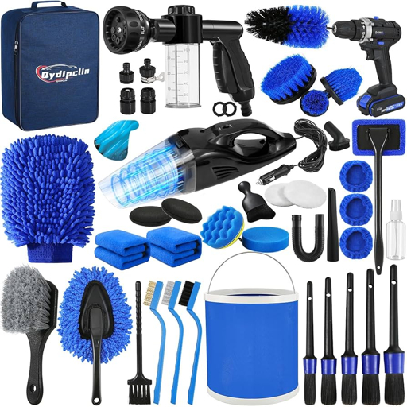

Cómo lavar tu auto sin dañar la pintura: Guía paso a paso

Un mal lavado puede dejar micro rayaduras y opacar el brillo de la pintura, aunque el auto quede "limpio". Con el método y los productos correctos, lavar tu vehículo en casa es seguro y muy efectivo.
Paso a paso
- Elige el lugar. Lava a la sombra y con la carrocería fría. El sol seca el shampoo y deja manchas de agua.
- Prelava con agua. Enjuaga todo el vehículo para retirar polvo y barro suelto antes de tocar la pintura.
- Limpia primero las llantas. Son la zona más sucia; si las dejas para el final, salpicarás suciedad sobre lo que ya lavaste.
- Usa el método de los dos baldes. Uno con agua y shampoo, y otro con agua limpia para enjuagar el guante cada vez que lo cargues.
- Lava de arriba hacia abajo con movimientos rectos, no circulares. Las partes más bajas son las más sucias y se dejan para el final.
- Enjuaga con abundante agua sin dejar que el shampoo se seque sobre la pintura.
- Seca con microfibra, apoyando y arrastrando el paño con suavidad, sin frotar.
- Protege la pintura. Aplica cera cada dos o tres meses para mantener el brillo y facilitar los próximos lavados.
Errores comunes que dañan la pintura
- Usar detergente de cocina: elimina la cera y deja la pintura sin protección.
- Lavar con esponjas viejas o toallas ásperas, que arrastran suciedad y rayan.
- Lavar bajo el sol directo o con la carrocería caliente.
- Usar el mismo paño en las llantas y en la pintura.
Consejo AutoCare: si un paño o guante se cae al suelo, no lo uses en la pintura hasta lavarlo bien. Un solo grano de arena puede dejar una rayadura.